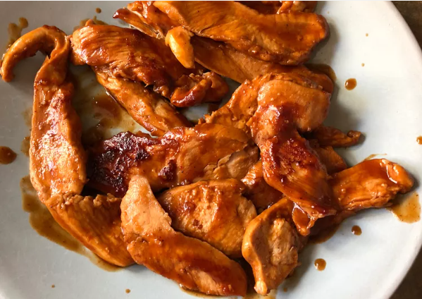

Emergency Chicken

Emergency Chicken Breast Recipe
This is a great recipe for a quick and easy entree. My wife, who is 8 1/2 months pregnant,
had chicken thawing and asked me to cook since she was exhausted. She didn't have any plans
so I just threw some things together and came up with this recipe. I'm sure it could be
improved upon, but in a pinch it was easy and delicious.
Ingredients
- 1 tablespoon butter
- ⅔ cup barbeque sauce
- 1 tablespoon Worcestershire sauce
- ⅔ teaspoon garlic powder
- 1 tablespoon vegetable oil
- ½ pounds skinless, boneless chicken pieces - cut into 1/2-inch stripst
- 1 tablespoon minced garlic
- 1 pound beef round steak, cut into thin strips
Directions
- Melt butter in a saucepan over medium heat. Stir barbeque sauce,
Worcestershire sauce, and garlic powder together with the melted
butter. Stir chicken into the sauce mixture to coat.
- Place cover on saucepan and simmer until the chicken pieces are
cooked through and no longer pink in the middle, 3 to 5 minutes.
Remove cover and spoon sauce over chicken pieces; continue cooking
until sauce thickens, about 4 minutes more.
Go back to menu